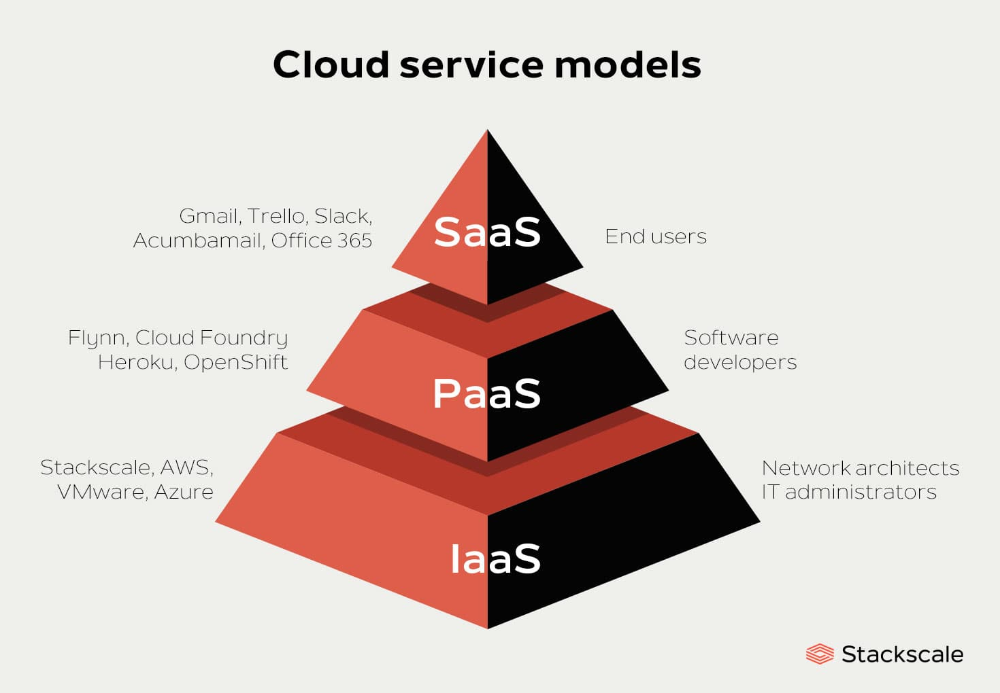
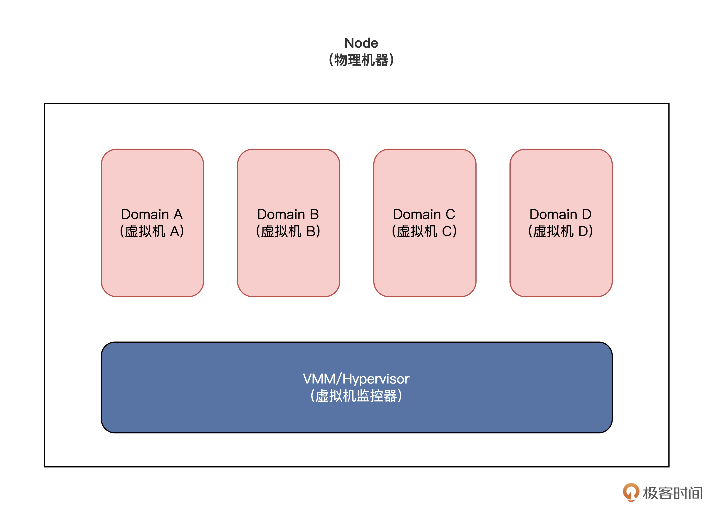
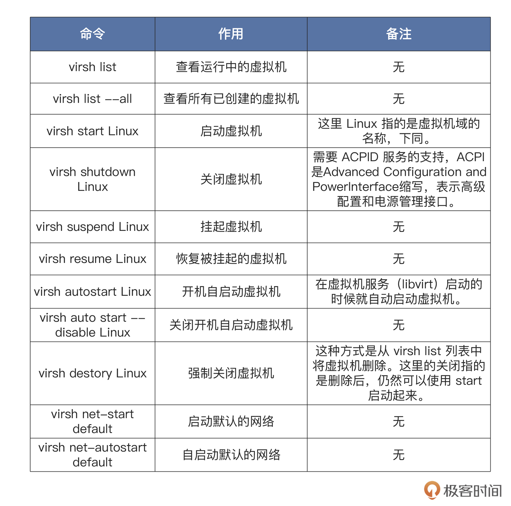
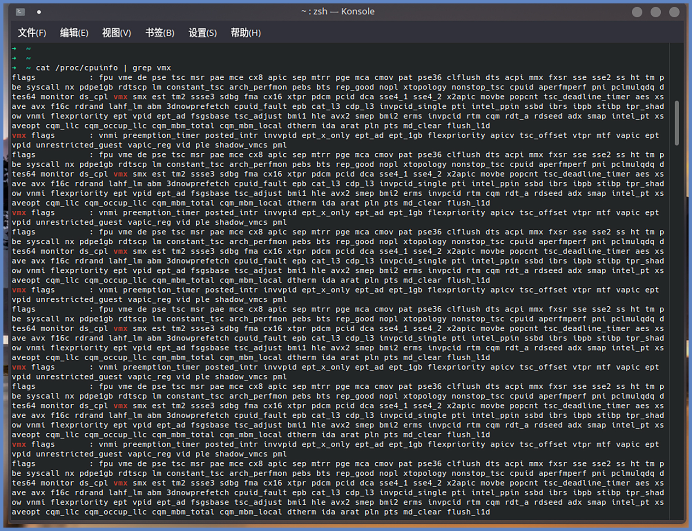
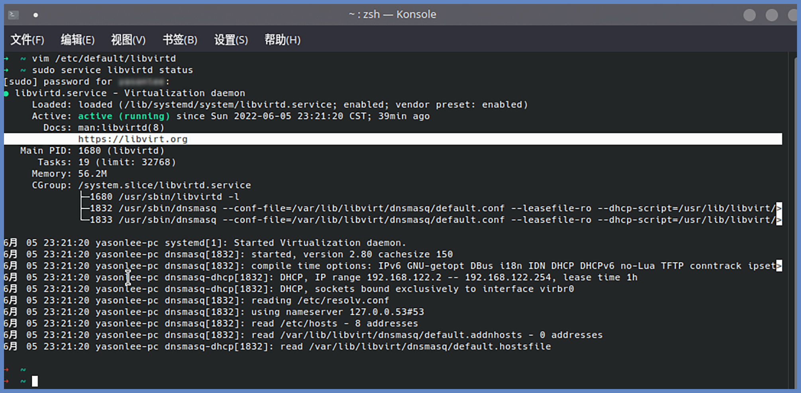
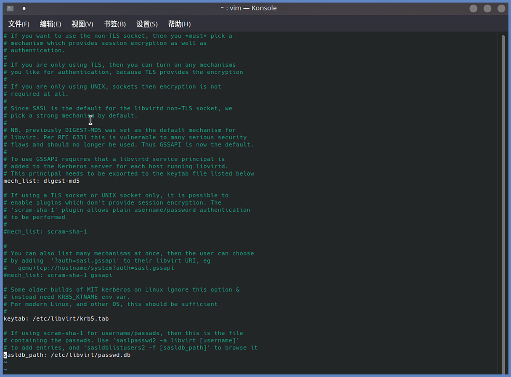
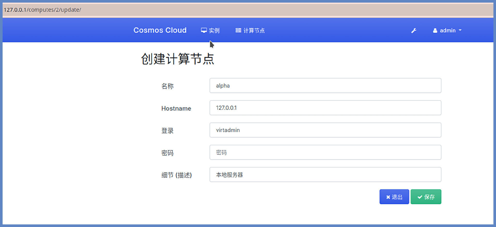
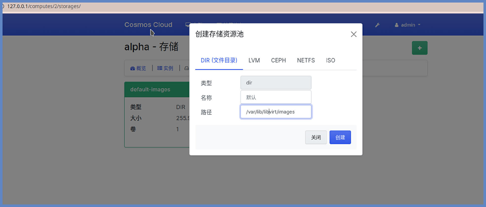
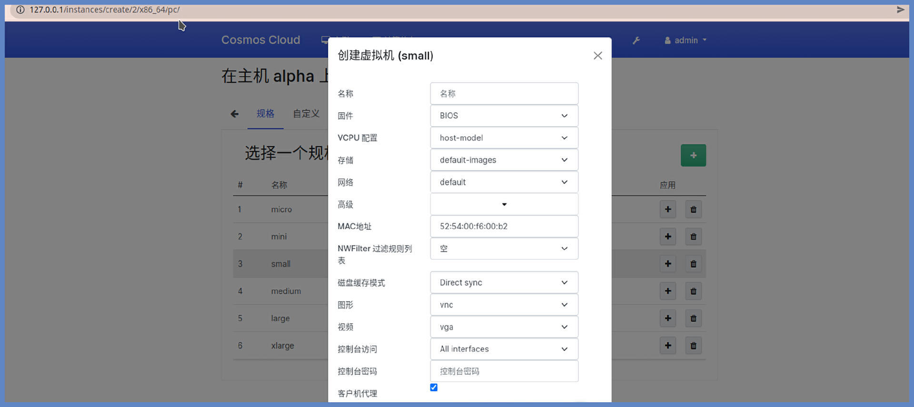
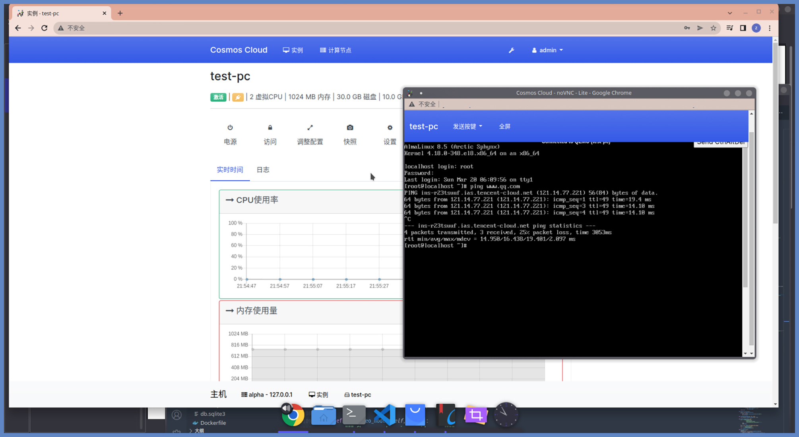

- 00 开篇词 练好基本功，优秀工程师成长第一步.md
- 01 CISC & RISC：从何而来，何至于此.md
- 02 RISC特性与发展：RISC-V凭什么成为“半导体行业的Linux”？.md
- 03 硬件语言筑基（一）：从硬件语言开启手写CPU之旅.md
- 04 硬件语言筑基（二）_ 代码是怎么生成具体电路的？.md
- 05 指令架构：RISC-V在CPU设计上到底有哪些优势？.md
- 06 手写CPU（一）：迷你CPU架构设计与取指令实现.md
- 07 手写CPU（二）：如何实现指令译码模块？.md
- 08 手写CPU（三）：如何实现指令执行模块？.md
- 09 手写CPU（四）：如何实现CPU流水线的访存阶段？.md
- 10 手写CPU（五）：CPU流水线的写回模块如何实现？.md
- 11 手写CPU（六）：如何让我们的CPU跑起来？.md
- 12 QEMU：支持RISC-V的QEMU如何构建？.md
- 13 小试牛刀：跑通RISC-V平台的Hello World程序.md
- 14 走进C语言：高级语言怎样抽象执行逻辑？.md
- 15 C与汇编：揭秘C语言编译器的“搬砖”日常.md
- 16 RISC-V指令精讲（一）：算术指令实现与调试.md
- 17 RISC-V指令精讲（二）：算术指令实现与调试.md
- 18 RISC-V指令精讲（三）：跳转指令实现与调试.md
- 19 RISC-V指令精讲（四）：跳转指令实现与调试.md
- 20 RISC-V指令精讲（五）：原子指令实现与调试.md
- 21 RISC-V指令精讲（六）：加载指令实现与调试.md
- 22 RISC-V指令精讲（七）：访存指令实现与调试.md
- 23 内存地址空间：程序中地址的三种产生方式.md
- 24 虚实结合：虚拟内存和物理内存.md
- 25 堆&栈：堆与栈的区别和应用.md
- 26 延迟分配：提高内存利用率的三种机制.md
- 27 应用内存管理：Linux的应用与内存管理.md
- 28 进程调度：应用为什么能并行执行？.md
- 29 应用间通信（一）：详解Linux进程IPC.md
- 30 应用间通信（二）：详解Linux进程IPC.md
- 31 外设通信：IO Cache与IO调度.md
- 32 IO管理：Linux如何管理多个外设？.md
- 33 lotop与lostat命令：聊聊命令背后的故事与工作原理.md
- 34 文件仓库：初识文件与文件系统.md
- 35 Linux文件系统（一）：Linux如何存放文件？.md
- 36 Linux文件系统（二）：Linux如何存放文件？.md
- 37 浏览器原理（一）：浏览器为什么要用多进程模型？.md
- 38 浏览器原理（二）：浏览器进程通信与网络渲染详解.md
- 39 源码解读：V8 执行 JS 代码的全过程.md
- 40 内功心法（一）：内核和后端通用的设计思想有哪些？.md
- 41 内功心法（二）：内核和后端通用的设计思想有哪些？.md
- 42 性能调优：性能调优工具eBPF和调优方法.md
- 先睹为快：迷你CPU项目效果演示.md
- 加餐01 云计算基础：自己动手搭建一款IAAS虚拟化平台.md
- 加餐02 学习攻略（一）：大数据&云计算，究竟怎么学？.md
- 加餐03 学习攻略（二）：大数据&云计算，究竟怎么学？.md
- 加餐04 谈谈容器云与和CaaS平台.md
- 加餐05 分布式微服务与智能SaaS.md
- 国庆策划01 知识挑战赛：检验一下学习成果吧！.md
- 国庆策划02 来自课代表的学习锦囊.md
- 国庆策划03 揭秘代码优化操作和栈保护机制.md
- 温故知新 思考题参考答案（一）.md
- 用户故事 我是怎样学习Verilog的？.md
- 结束语 心若有所向往，何惧道阻且长.md
加餐01 云计算基础：自己动手搭建一款IAAS虚拟化平台
你好，我是LMOS。
必学内容已经更新结束，不知道这一个月以来，你是否跟上了大部队的步伐，有什么样的学习收获？在你学习追更期间，我也在为你精心准备技术雷达专题的加餐。
这节课，我会带你一起了解KVM，并带你动手搭建一套私有化的IAAS平台，这其实是一个既有趣又有价值的事情。首先，让我们从全局的角度来看一下，目前业界常用的云计算平台，它的架构分层是什么样子。
云计算的分层架构
业界一般会把云计算分为三层，分层模型图如下所示：

具体定义你可以看Intel的这篇文章，这里就不展开了。
从架构分层上，我们看得出IAAS是整个云计算的基础，而KVM虚拟化技术则又是IAAS平台的基础，堪称云计算大厦的地基。如果IAAS层离开了虚拟化技术，软件系统就会在一定程度上失去屏蔽硬件差异和弹性伸缩迁移的能力。
另外，从产品发展历史的角度来看，不论是国外的Amazon云还是国内的腾讯云、阿里云，早期最先上线开始售卖的产品，其实都是弹性云虚拟机。
我们可以脑补一个场景，如果你的老板发现公司业务发展得不错，但是一直把核心业务数据放在公有云上，会有一定的风险。这时候需要你来搭建一套私有化的IAAS平台，你能做得到么？
如果我们想要在虚拟化领域做出一款IAAS平台，仅仅只了解核心原理远远不够。因为要想实现一个工业级的IAAS，我们直接操作底层API，就会导致上层和底层的强耦合，这不利于提高通用性。
KVM虚拟化的基础能力
所以我们不妨结合软件工程思想分析一下，如果我们想解除耦合，需要怎么办呢？
没错，我们可以统一抽象出上层API。而接下来我们要讲的libvirt，就是一套主流的KVM虚拟机管理程序接口和工具。
初识libvirt
libvirt主要包含3个部分，分别是：命令行管理工具virsh、API接口库、守护进程libvirtd。其中libvirtd进程主要负责执行对虚拟机的各种管理工作，在后面我们会展开讲解。
libvirt的核心概念包括节点（Node）、虚拟机监控器(VMM/Hypervisor)、域（Domain）。
节点就是一台具体的物理机；虚拟机监控器是指用来管理物理机上多个虚拟机的软件；而域指的是具体运行在物理机上的一台虚拟机，有些云计算平台也把它称作客户机/实例，但其实表达的是同一个意思。
具体的概念逻辑关系图如下所示：- 
libvirtd主要负责执行其他管理工具发送过来的虚拟化管理指令。各种客户端（比如virsh）可以通过链接远程或者本地的libvirtd进程来执行虚拟机的开关机、重启迁移等操作，还可以收集物理机和虚拟机各种资源的使用状况和运行状态。
如果我们想要通过libvirt管理远程或者本地的Node，就必须安装libvirtd。
libvirt核心API
如果想要理解libvirt的功能，效率最高的方式也许就是先看一下它的核心API。libvirt API主要包含8个部分，我们分别来看看。
想要管理虚拟机，首先要和VMM/Hypervisor建立连接。这就需要用到连接VMM/Hypervisor的相关API，其命名方式一般是以virtConnect为前缀的函数。
第二部分是节点管理相关的API，命名方式一般是以virNode为前缀的函数。这部分API用于管理运行着域的物理节点，具体可以用来查询物理节点上的CPU、内存等基本信息，也可以控制物理节点暂停/启动等操作。
第三部分是域管理相关的API，命名方式一般是以virDomain为前缀的函数。这部分API主要用于对各个节点上的域进行管理操作，包括控制域的生命周期、查询域的信息等操作。
第四、五部分是存储相关的API。存储卷管理相关的API，命名方式一般是以virStoreVol为前缀的函数。这类API用来管理虚拟机镜像，虚拟机镜像一般是qed、vmdk、raw、qcow2等格式；而存储池管理相关的API，命名方式一般是以virStorePool为前缀的函数。存储池管理的是网络共享文件系统、本地文件系统、iSCSI共享文件系统、LVM分区等等。
第六部分是网络管理相关的API，命名方式一般是以virNetwork、virtInterface为前缀的函数。这些函数可以用于创建、释放网络接口、查询网络接口的相关状态以及管理网桥。
第七部分是数据流管理相关的API，命名方式一般是以virStream为前缀的函数。这些函数可以用于数据流的传输管理。
最后是第八部分，事件管理相关的API，命名方式一般是以virEvent为前缀的函数。libvirt的事件管理机制可以让我们注册自定义的事件处理逻辑，当某些事件（比如虚拟机暂停、恢复、启停等）发生的时候，我们可以根据这些事件发生后的通知信息来处理后续逻辑。
怎么使用virah工具？
其实实际工作中并不是所有场景都要写个程序去调用libvirt API的，我们可以通过KVM系统提供的virah工具来进行命令行管理，这样可以省去一些开发工作量。
virsh程序是一个用来管理虚拟机的命令行客户端，在我们日常运维、debug排查问题的时候使用这个工具会比较方便。大多数virsh命令的用法是这样的：
virsh [选项] … <命令> <域> [参数] …
我把常用命令用表格做了梳理，供你参考：- 
更多指令操作也和上表列出的类似，你可以参考官方文档进一步了解。
动手搭建一款自己的IAAS虚拟化平台
网上有很多讲IAAS平台的教程。上来就拿OpenStack、Ovirt、ProxmoxVE之类的商用软件开始讲，这其实存在一定的问题。
首先，这些软件是商业用途，对外提供服务需要额外的授权费用。
其次，这些软件为了兼容太多的业务场景做了很多复杂的设计，这并不利于新手学习。
最关键的是，这些商用软件针对自己的理解，对很多底层API做了封装。这样虽然简化了使用开发、优化了使用体验，但也让我们失去了对底层细节的直接操纵能力，容易导致学习理解不够透彻。
所以，我们选择了基于更加轻量级的KVM Web管理系统——WebVirtCloud，用它来搭建我们的学习和实验环境。
硬件配置&操作系统版本
KVM是一种依赖于硬件虚拟化扩展支持的技术，因此我们首先要选择一款支持Intel VT/AMD-V指令集的CPU。
这里我选择的是Intel® Xeon® CPU E5-2680 v4这款CPU的服务器，你可以使用下面的命令查看你的CPU是否支持虚拟化：
cat /proc/cpuinfo | grep vmx ## Intel的CPU
cat /proc/cpuinfo | grep svm ## Intel的CPU
如果出现类似下图中的显示，则说明这款CPU是支持硬件虚拟化指令集的。- 
当然，有一些电脑的CPU虽然支持硬件虚拟化，但是有可能默认并未启用，这时候就需要我们在BIOS设置中开启硬件虚拟化功能，才可以使用（具体操作你可以自行Google）。
其次，因为后续可能需要开多个虚拟机，内存占用可能会略高，建议你选择RAM大于8GB的电脑，这里我选择了128GB的内存。
除了了硬件配置，我们还得约定一下操作系统版本。这里我选择的是Ubuntu 20.04 LTS版本（LTS版本支持的更久，基础库也更稳定），关于Ubuntu系统的安装，网上有很多教程，相信你有能力搞定它。
安装依赖并修改配置
硬件配置要求和操作系统版本我们约定好了，我们还要通过执行下面的命令来安装必要的依赖：
sudo apt-get install vim libvirt-daemon-system libvirt-clients
sudo apt-get install sasl2-bin libsasl2-modules bridge-utils
然后，我们需要修改 vim /etc/default/libvirtd 的配置，找到libvirtd_opts，修改为libvirtd_opts=“-l”。
为了暴露远程调用能力，我们需要修改 vim /etc/libvirt/libvirtd.conf 配置文件，从而开启tcp、sasl。
# 允许tcp监听
listen_tcp = 1
listen_tls = 0
# 开放tcp端口
tcp_port = "16509"
# 监听地址修改为 0.0.0.0，或者 127.0.0.1
listen_addr = "0.0.0.0"
# 配置tcp通过sasl认证
auth_tcp = sasl
之后，我们需要开启vnc端口监听，编辑 vim /etc/libvirt/qemu.conf，找到 “# vnc_listen = …” ，将前面的 # 注释修改为：
vnc_listen = "0.0.0.0"
为了用户组下的用户能够使用libvirt，我们需要继续修改上面的配置文件，找到 user 和 group 这两个选项，取消注释，修改为 libvirt-qemu，具体命令是：
user = "libvirt-qemu"
group = "libvirt-qemu"
最后，我们需要重启一下服务，命令是：
sudo service libvirtd restart
重启之后，我们可以通过下面的命令来查看服务状态。
sudo service libvirtd status
如果出现下图这样的效果，就说明配置成功了。- 
创建管理员账号
为了方便管理，我们需要创建管理员账号。在创建管理员账号之前，我们需要先确认一下/etc/sasl2/libvirt.conf文件的最后一行是不是sasldb_path: /etc/libvirt/passwd.db，以及mech_list的值是不是digest-md5。
我机器上的运行效果如下图所示：- 
接下来，我们就可以为libvirtd创建用户名和密码了，客户端连接时需要用到它们。
sudo saslpasswd2 -a libvirt virtadmin
当然，如果你想要查询已经创建好的用户，就可以使用这条命令：
sudo sasldblistusers2 -f /etc/libvirt/passwd.db
然后，我们需要重启libvirtd服务，让刚刚创建的用户生效。重启命令如下：
sudo service libvirtd restart
安装WebVirtCloud
安装好了libvirt之后，你可能会觉得通过命令行管理KVM虚拟机会比较繁琐，那么能不能像使用云主机那样，通过Web UI来可视化的管理虚拟机呢？当然是可以的，这时候我们就需要安装一下WebVirtCloud了。
WebVirtCloud是一个基于libvirt的开源的轻量级Web客户端，它是基于Python的Django框架进行开发的，整体代码结构比较清晰，代码量虽然不多，但已经包含了一个生产可用的IAAS平台所需的大部分功能了。这个项目的GitHub地址，你可以点这里查看。
它不像OpenStack之类的开源项目那样太过复杂，非常适合刚入门虚拟化IAAS平台开发的工程师学习和使用。
为了节约安装时间，我们可以使用官方提供的快速安装脚本一键安装：
wget https://raw.githubusercontent.com/retspen/webvirtcloud/master/install.sh
chmod 744 install.sh
# 需要在root权限下运行
sudo ./install.sh
安装完毕后，我们可以使用下面的命令，重启Nginx和supervisor：
sudo service nginx restart
sudo service supervisor restart
接下来，我们来看看WebVirtCloud是正确启动了，查看命令如下：
sudo supervisorctl status
如果WebVirtCloud的进程处于运行状态，则说明安装成功了。
创建虚拟机
安装好WebVirtCloud，我们继续实验，一起完成创建虚拟机的操作。
首先我们需要在浏览器访问 http://127.0.0.1/ 这个地址，然后填写用户名密码“admin/admin”，就可以进入到Web控制台。
要想基于当前物理机创建虚拟机，我们先要点击计算节点菜单，把前面创建好的账号添加到计算节点，如下图所示：

接下来，我们需要点击刚刚创建成功的计算节点上的眼睛图标，进入存储菜单添加存储资源池：

现在，我们就可以点击实例菜单的加号，创建新实例（虚拟机）啦：

创建好虚拟机之后，你就可以选择安装自己喜欢的操作系统了，下图就是我安装的AlmaLinux操作系统的运行状态：- 
好了，到目前为止，你已经成功地搭建了一套自己的IAAS平台，并在上面运行起了AlmaLinux操作系统，这说明这套IAAS已经拥有了和主流云虚拟机平台类似的基础能力。
如果是家用的场景，我们还可以在此基础上搭建自己的NAS存储、软路由、家庭影院等常用软件。如果用在公司，我们可以用它搭建开发环境、测试环境、生产环境等等。更多用途，等待着你的探索和发掘。
重点回顾
这节课，我们使用KVM、libvirt和WebVirtCloud从零开始搭建了一套自己的IAAS平台。
首先，我带你了解了云计算的分层架构。从架构分层上就能看出，IAAS是整个云计算的基础。IAAS层离不开虚拟化技术的支撑。
接着我为你介绍了主流的KVM虚拟机管理程序接口和工具——libvirt，带你了解了它的核心API。最后是动手搭建的实操环节，推荐你跟着课程里的讲解亲自动手实验一下，这样才会有更深的体会。
另外，在第一季专栏《操作系统实战45讲》中，我曾经给你分享了KVM的核心原理和部分核心代码逻辑，如果感兴趣，可以去看看《43 | 虚拟机内核：KVM是什么？》。
思考题
请你思考一下：WebVirtCloud是如何把页面上创建虚拟机的操作传递给libvirt，并找出对应的关键代码的呢？
© 2019 - 2023 Liangliang Lee. Powered by Vert.x and hexo-theme-book.